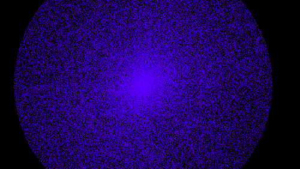

Particle System
The Project
After working on previous projects, I took a particular interest in particle systems. I loved how they looked, and I wanted to play with OpenGL to see how far I can go with particles.
As a first pass, I implemented a particle system by doing 1 draw call per particle. This was very simple to do, and since the particles were simulated on the CPU, I could create cool effects!

Of course, doing 1 draw call per particle is very slow. Here, I was only able to draw ~10,000 particles before performance became an issue.
Over the course of my years at DigiPen, I became more familiar with graphics APIs and realized this could be done much better. The next thing I tried was geometry shaders. Now, rather than doing 1 draw call per particle, I filled a vertex buffer with the each particle's information and called draw once on that. The vertex shader would position particles, and the geometry shader would create quad vertices based on the particle's transformation. Now, I was able to get ~100,000 - 1,000,000 particles drawing no problem! The bottleneck now was the GPU's data bandwidth and simulating on the CPU.
To solve these issues, I looked to compute shaders and researched how they are implemented. Resources I used: "It's More Fun to Compute: An Introduction to Compute Shaders" and "Compute Shader". The particle data now lives and is simulated on the GPU entirely. No data needs to move between the CPU and GPU. Because of this, I was able to get ~10,000,000 particles simulating in real time on my computer.
I was super excited to see this many particles on screen - it looks so cool too! But, with this many particles, it's not practical to run this continuously as it was using 99% of my GPU's resources. Also, I wasn't able to create as cool of effects without writing more complex compute shader and CPU-GPU interface code.
Because of these issues, I decided to move forward with the geometry shader solution. Besides, as you approach more than 1,000,000 particles, it's hard to tell the difference.
Animated Desktop
In development, I noticed I would just sit and play with the particles for a while. So, it got the idea: it would be really nice to have this on my desktop background. The more I thought about this, the more fun it sounded.
I got to work making an application to create a window as my desktop and render whatever I wanted. I used the Windows API to create a borderless window, resized it to my desktop, and forced it to always stay on the bottom. Then, I could render the particles and a few pictures made for a very entertaining background.
The final piece was to commission Dylan King (an artist from my game teams) to paint a scene of a wizard overlooking a landscape and star-filled sky. I also made a specific request for him to split the painting up into many layers with alpha masks. Once he was finished, I layered the painting and my particle system as the stars to create the background I use today!